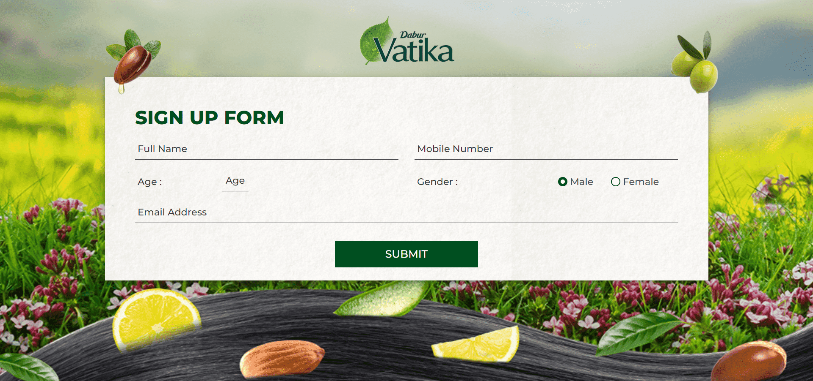
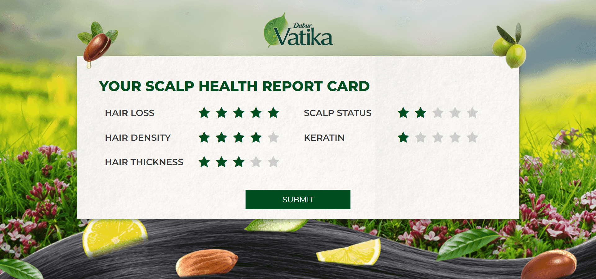

01 · Profile
Start with the user.
A concise sign-up step creates the foundation for a personal report.

Vatika · Scalp Health Application
A guided diagnostic experience that turns five hair and scalp indicators into a simple report card and a relevant Vatika product pairing.
Project overview
A recommendation feels more credible when the user can see the assessment behind it.
The Vatika Report Card structures self-reported hair and scalp indicators into an accessible score, identifies the main concern and connects it to a complementary oil-and-shampoo solution.
The diagnostic model
The application journey
A concise sign-up step creates the foundation for a personal report.

A star-based report turns multiple indicators into a score that is quick to read.

The result identifies the primary concern, explains the natural ingredient direction and presents a paired solution.
The experience challenge
Technical-sounding indicators needed to become approachable without making the journey feel superficial.
The final pairing needed to feel like the result of the assessment—not a product message added at the end.
Information architecture
Capture the minimum user information needed to begin.
Assess five complementary hair and scalp indicators.
Identify the concern that most needs attention.
Pair a natural ingredient direction with relevant products.
The outcome
The report-card format creates a transparent bridge between user input, visible assessment and product recommendation—making the journey easier to understand and the outcome more relevant.
Users can see how individual indicators contribute to the result.
The interface identifies one primary concern instead of presenting a wall of information.
Oil and shampoo appear as one coordinated response to the diagnosed need.
Understand the concern.Recommend with purpose.
Building a smarter recommendation tool?